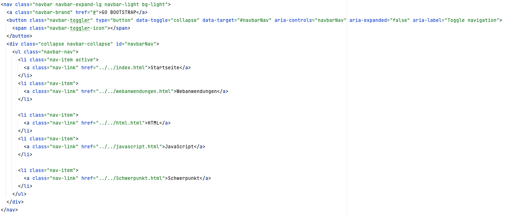

PORTFOLIO
Der Schwerpunkt
Bootstrap
Front End Development Framework
Boots- was?
Bootstrap ist ein kostenloses, open-source Framework für die Entwicklung von Webseiten (und Web-Apps, aber darauf gehe ich hier nicht so detailliert ein).Bootstrap beinhaltet Templates für HTML, CSS und JS-Features für Elemente wie Buttons, Tabellen, Navigationsleisten, Formulare und Typographie (Schriftarten etc.). Es wurde von Twitter entwickelt und ist im August 2011 veröffentlicht worden, es gibt aber immer noch aktuelle Versionen und Support dafür. Twitter hat es damals entwickelt, um die verschiedenen intern genutzten Bibliotheken für das Front-End zu vereinheitlichen. Bootstrap ist das Fundament der Website, auf dem andere Teile/Elemente aufbauen.
Wie kam ich auf Bootstrap? Nachdem wir viel in der Vorlesung über jQuery als Front-End Bibliothek gehört haben, habe ich mal nachrecherchiert, was es noch so in die Richtung gibt und was ICH auch verstehen würde, ohne mich 42 Stunden lang einzuarbeiten. Somit bin ich auf neue Trends in Richtung Frameworks wie Angular und React gestoßen, von denen ich auch schon gehört habe. Diese Frameworks fand ich aber persönlich zu komplex, um sie in 5 Seiten anschaulich zu erklären oder ihnen gerecht zu werden, deshalb hab ich mich für Bootstrap entschieden, denn damit hatte ich die Möglichkeit, auch ein paar Features oder Templates HIER auf der Website aufzuzeigen.
Bringt uns das was? Vor und Nachteile:
Genauso wie bei allen Frameworks und Bibliotheken gibt es bei Bootstrap auch Vor- und Nachteile. Aber fangen wir erstmal mit den Vorteilen an.Bootstrap ist einfach zu bedienen, auch eines der Gründe, warum ich es als Thema gewählt habe. Es ist benutzerfreundlich, einfach zu verwenden (auch für Anfänger, wie mich..). Außerdem gibt es überall Tutorials und Dokumentationen, wie man es benutzen kann. Ein paar davon kann man auch unter Quellen finden. Ich persönlich habe auch auch in ein paar Tutorials auf diese Weise gesehen, um mich zu informieren. Somit lernt man schnell, effektiv und einfach die Verwendung von Bootstrap.
Als zweites und genauso wichtig: Bootstrap hat ein responsives Design, ist daher für responsives Webdesign optimiert. Responsiv bedeutet: die Website passt sich automatisch an die Größe und das Seitenverhältnis des Geräts, auf dem sie angezeigt wird, an. Somit kann ich auf dem iPad, Laptop und am Monitor die Website in angepassten und angenehmen Verhältnissen ansehen. Ein optimales Nutzererlebnis wird also gewährleistet.
Dazu ist Bootstrap kostenlos, mit vielen weiteren kostenlosen Vorlagen/Templates/Themes. Diese Templates sind auch einfach anpassbar, somit kann man schnell, einfach und individuell eine professionelle Website erstellen.
Zuletzt ist Bootstrap auch weit verbreitet, eine einfache Google-Suche liefert schon endlos viele Tipps, Tricks und Infos zu Was Bootstrap ist, wie man es implementieren kann und was man damit bauen kann etc.. Es gibt auch viele Ressourcen, Plugins und eine ausgeweitete Community, die bei Problemen, Fragen und ähnlichem helfen kann.
Das wars erstmal mit den Vorteilen, betrachten wir als Nächstes die Nachteile:
Obwohl es viele Templates und Plugins gibt, ist Bootstrap dennoch in manchen Bereichen nur eingeschränkt anpassungsfähig. Es gibt viele Designoptionen, aber manchmal möchte man als Entwickler natürlich, dass die eigene Website genauso aussieht, wie man sie sich vorstellt. In manchen, individuellen Fällen, lässt Bootstrap und Bootstraps Grenzen das nicht zu.
Da es sehr viele Funktionen und Styles gibt, die man möglicherweise gar nicht für das eigene Projekt benötigt, könnte der Code der Website überladen werden. Das führt dazu, dass die Ladezeit der Website verlangsamt wird, obwohl der Grund dafür eigentlich „unnötig“ ist (weil man diese Funktionen eben nicht verwendet).
Zum Abschluss ist es noch relevant zu erwähnen, dass Bootstrap mögliche Sicherheitslücken aufzeigen könnte. Da es von vielen Entwicklern genutzt wird, kann das auch bedeuten, dass Bootstrap-Seiten ein Ziel von Cyber-Angriffen sein kann. Also sollte man beachten, regelmäßig Sicherheitsupdates durchzuführen, damit die Website sicher bleibt.
Installation und Implementierung
Es gibt drei Möglichkeiten, Bootstrap zu nutzen.1. Bootstrap herunterladen
Man kann Bootstrap von der Bootstrap Website (siehe Quellen) herunterladen und dann in HTML auf die physischen Dateien verlinken. Das sieht dann so aus: Bootstrap CSS
<-link rel="stylesheet" href="css/bootstrap.min.css">
Bootstrap JavaScript
<-script src="js/bootstrap.bundle.min.js">
Diese Datei(en) (heruntergeladen von Bootstrap), befindet sich auch im Ordner Ubungen (ich musste den Namen leider von Übungen ändern) unter Bootstrap.
2. Stylesheet Link in HTML und script Link in JS
Anstatt die Bootstrap Dateien lokal (im Projekt) zu hosten, kann man einen Link in HTML/JS nutzen, um mit CDN auf Bootstrap zu verweisen. Das ist schnell und einfach, deshalb habe ich auch im Beispiel diese Methode genutzt.
<-link rel="stylesheet" href="https://cdn.jsdelivr.net/npm/bootstrap@4.5.3/dist/css/bootstrap.min.css" integrity="sha384-TX8t27EcRE3e/ihU7zmQxVncDAy5uIKz4rEkgIXeMed4M0jlfIDPvg6uqKI2xXr2" crossorigin="anonymous">
<-script src="https://cdn.jsdelivr.net/npm/bootstrap@4.5.3/dist/js/bootstrap.bundle.min.js" integrity="sha384-ho+j7jyWK8fNQe+A12Hb8AhRq26LrZ/JpcUGGOn+Y7RsweNrtN/tE3MoK7ZeZDyx" crossorigin="anonymous">
3. Paket-Manager wie npm
Mit einem Paket Manager kann man Bootstrap installieren und dann in das Projekt implementieren. So zum Beispiel:
// Mit npm
npm install bootstrap
// Mit yarn
yarn add bootstrap
Nach der Installation kann man die Bootstrap Dateien in das Projekt importieren (durch imports):
// JavaScript
import 'bootstrap/dist/css/bootstrap.css';
import 'bootstrap/dist/js/bootstrap.js';
// Oder, wenn man nur CSS importieren möchten
import 'bootstrap/dist/css/bootstrap.css'; -->
Ein paar Beispiele (von mir)
Wie schon oben aufgezeigt, gibt es verschiedene Weisen, Bootstrap zu nutzen. In diesem Beispiel habe ich über einen Stylesheet Link und über die script tags Bootstrap verlinkt. Das empfand ich als den einfachsten Weg. Den genauen Link fand ich auf der Website von Bootstrap (getbootstrap.com). Diese Seite ist auch sehr empfehlenswert, da es dort die Templates und ein Introduction Guide zu finden gibt mit Einführungen in alle nutzbaren Code Snippets (siehe erste Quelle).


Außerdem habe ich die Bootstrap Download Datei in den Ordner Ubungen gepackt, da ich sehen wollte, wie diese aufgebaut ist und als weiteres Beispiel. Ich nutze diese Datei(en)/diesen Ordner aber nicht.
Danach habe ich nach Templates, Code Snippets und einfach simplen Beispielen gesucht, die ich nutzen (und verstehen) kann. Auf der Bootstrap Seite wurde ich dann mit dem example Ordner fündig. Dieser befindet sich auch unter Ubungen/Bootstrap. Man findet dort die simpelsten Beispiele und Dummy-Code zum Bearbeiten und Nutzen. Das habe ich auch mit dieser Seite gemacht, um es ausprobieren. Ich wollte keine perfekte Website, oder super Funktionalitäten, ich wollte einfach ein paar Features ausprobieren und in meine Website einbeziehen. Daher habe ich mich für Standard HTML Code entschieden ohne JavaScript. Im folgenden zeige ich den Code der Website, die man unter dem Button aufrufen kann:
Als einfachstes Beispiel zeige ich hier erstmal die Navbar/Navigationsleiste, hier habe ich sogar Links zu meiner Website hinzugefügt (diese Seiten sind dann aber ohne Bootstrap). Wie man sehen kann, befinden sich immer in den Opening Tags von HTML die Klassen dabei, die zu Bootstraps CSS linken. Diese Klassen zeigen dann auf, welche Styles das hat, was genutzt wird etc. Weitere Eigenschaften sind hier zum Beispiel label, controls etc. (im button Tag). Oben in der Navbar wird dann noch das Design durch navbar-light etc. festgelegt, dass unsere Navbar hell sein soll. Das zieht sich über das gesamte Konzept Bootstrap, dass man Farben, Designs etc. durch diese Klassen (wie basic css eben) festlegen kann.
- 
Unten erkennt man noch spezielle Symbole ,die ich noch zeigen wollte, die als svg Dateien von Bootstrap genutzt werden können. Zum Beispiel Symbole mit der ID Home, Speedometer 2 et. Mit den IDs kann man diese dann auch nutzen/aufrufen/ändern etc..

Hier sieht man dann noch den Container div, der meinen Willkommenstext und den basic html body text asugibt, den ich nutze (hier kein Bootstrap, nur generell der Style ändert sich von meinem Stylesheet was vorher genutzt wurde .Ich wollte damit nur aufzeigen, wie sich das von meiner Standard Website ändert, durch die Nutzung des Bootstrap sheets.
Zu allerletzt wollte ich dann noch ein paar interessantere Features nutzen, die ich durch die Beispiele gefunden habe. So wie hier ein container Element, mit verschiedenen Spalten in denen Überschriften, Text und Links zu finden sind. Dazu gibt es icons, die von Bootstrap, nicht von mir sind und aufgegriffen werden. Die verschiedenen colums/Spalten habe ich hier Uno, Dos und Tres genannt, einfach um mit der Seite etwas herumzuspielen.
Ende Gelände, und was lernen wir daraus?
Um zum Schluss nochmal auf die Vor- und Nachteile und was ich daraus gelernt habe einzugehen, möchte ich erwähnen, dass es für mich sich als sehr hilfreich herausgestellt hat, darauf gehe ich auch im folgenden Absatz näher ein. Natürlich sind aber die Nachteile zu berücksichtigen: Bootstrap ist eingeschränkt anpassungsfähig, aber für meine Bedürfnisse reicht es. Sicherheitslücken sind natürlich zu beachten, vorallem wenn es nicht um kleine private Projekte wie dieses Portfolio geht. Der Code kann auch überladen sein, ja, vorallem wenn ich die Bootstrap Dateien downloade, das wäre nicht nötig gewesen.Am Ende des Tages bin ich mit meiner Themenwahl sehr zufrieden, ich muss aber ehrlich sagen: Hätte ich mal früher von Bootstrap gehört, hätte ich mir beim Rest der Website nicht so viel Mühe geben müssen.
Allein die Zeit, die verbracht habe, 217 div’s links, rechts, quer und am besten auch noch Tabellen richtig anzuordnen, hätte ich (mindestens) halbieren können, hätte ich mich mal vorher in Bootstrap eingelesen. (Natürlich gibt es noch andere Templates und Features, aber damit war ich persönlich am ehesten beschäftigt.)
Außerdem muss ich in der Zwischenzeit unbedingt noch lernen, wie man die Links wieder entfärbt. Nur auf dieser Seite werden mit jetzt meine Links blau angezeigt (wie man es von Links eigentlich gewohnt ist) aber um ehrlich zu sein, bin ich nicht so der größte Fan davon. Aber das finde ich bestimmt bald leicht heraus! Vorerst steht aber alles am richtigen Platz, das ist viel wichtiger.
Aber naja gut, ist noch kein Meister vom Himmel gefallen. Für das vierte Semester bin ich dann ordentlich gewappnet!
Quellen
Bootstrap selbstWikipedia zum Einstieg
Weitere Definition
Tutorial 1
Tutorial 2
How-to Website mit Bootstrap
Mehr Infos